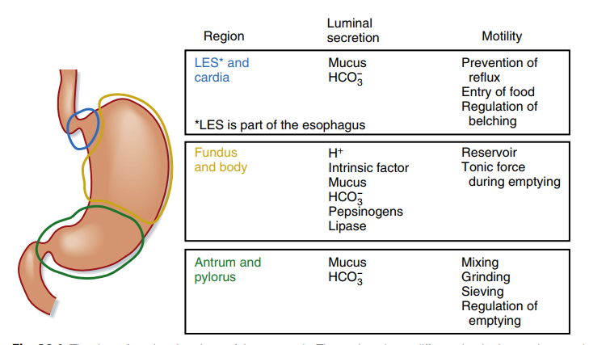
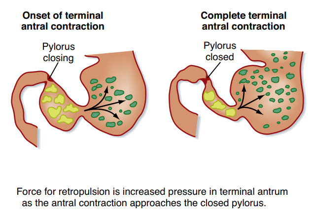
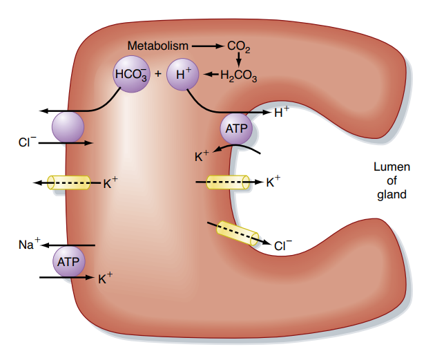
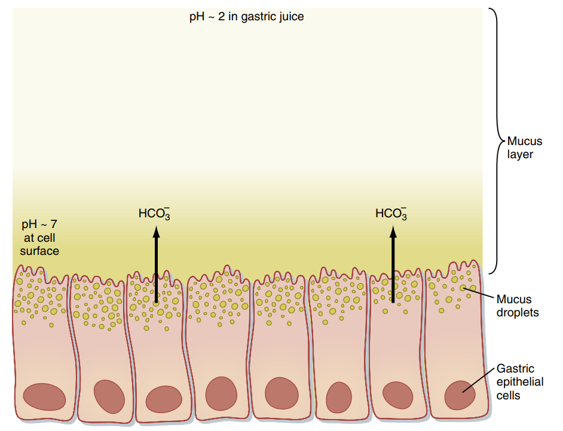
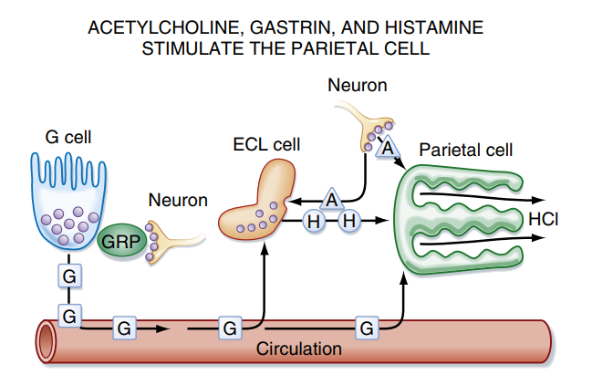

Sinh lý dạ dày
Tìm hiểu cấu trúc giải phẫu chức năng; hoạt động cơ học chứa đựng, nhào trộn và tống thoát dưỡng trấp; hoạt động bài tiết dịch vị, cơ chế tiết HCl ở tế bào thành, điều hòa thần kinh - thể dịch và các ứng dụng lâm sàng loét dạ dày, hội chứng Zollinger-Ellison, thiếu máu ác tính cùng dược lý điều trị.
Phần I: Cấu trúc giải phẫu và chức năng cơ bản
Dạ dày (stomach) là đoạn phình to nhất của ống tiêu hóa, đóng vai trò quan trọng như một túi chứa thức ăn tạm thời, nhào trộn cơ học và khởi phát quá trình tiêu hóa hóa học protein.
Về mặt giải phẫu: Dạ dày được chia thành ba vùng chính: đáy vị (fundus), thân vị (corpus/body), và hang vị (antrum). Hai đầu của dạ dày được giới hạn bởi cơ vòng tâm vị (nối với thực quản) và cơ vòng môn vị (nối với tá tràng). Thành dạ dày cấu tạo từ trong ra ngoài gồm 4 lớp: thanh mạc, lớp cơ (gồm 3 lớp cơ trơn: cơ dọc ngoài, cơ vòng giữa, cơ chéo trong giúp tạo lực co bóp đa hướng cực mạnh), lớp dưới niêm mạc chứa mạng lưới mạch máu - thần kinh, và lớp niêm mạc chứa các tuyến tiêu hóa.
Về mặt chức năng tiêu hóa: Dạ dày được phân chia thành 2 vùng chức năng chính:
Chức năng chủ yếu là chứa đựng thức ăn (reservoir), duy trì một trương lực co bóp nhẹ liên tục để ép thức ăn xuống phần xa, đồng thời bài tiết dịch vị bao gồm acid clohydric (HCl), pepsinogen và yếu tố nội tại.
Chức năng chủ yếu là co bóp, nhào trộn (mixing), nghiền nát thức ăn (grinding) và điều hòa sự tống thoát dưỡng trấp xuống tá tràng (emptying). Vùng này tiết nhiều chất nhầy bảo vệ, pepsinogen và hormone Gastrin kích thích bài tiết acid.

Phần II: Hoạt động cơ học của dạ dày
Hoạt động cơ học của dạ dày được thiết kế để chứa đựng lượng thức ăn lớn một cách tạm thời, nhào trộn đều thức ăn với dịch vị tạo thành dưỡng trấp mịn và tống thoát dưỡng trấp xuống tá tràng một cách có kiểm soát.
1. Chức năng chứa đựng và Giãn tiếp nhận (Receptive relaxation)
Khi dạ dày trống, thể tích của nó rất nhỏ (~50 mL). Tuy nhiên, khi ăn, dạ dày có thể giãn rộng ra để chứa đựng lượng thức ăn lên đến 1.5 Lít mà áp suất trong lòng dạ dày hầu như không tăng đáng kể.
Cơ chế này được gọi là giãn tiếp nhận (receptive relaxation). Khi thức ăn kích thích thụ thể căng ở thành họng và thực quản, tín hiệu truyền về hành não rồi truyền ngược lại qua sợi ly tâm của dây thần kinh lang thang (dây X), giải phóng các chất truyền tin thần kinh ức chế là Nitric Oxide (NO) và Vasoactive Intestinal Peptide (VIP) để gây giãn cơ trơn vùng đáy và thân vị. Thức ăn mới vào sẽ nằm ở trung tâm khối thức ăn theo các vòng tròn đồng tâm, thức ăn cũ hơn bị đẩy ra sát thành dạ dày tiếp xúc trước với dịch vị.
2. Co bóp nhu động, Nhào trộn và cơ chế Dội ngược (Retropulsion)
Các sóng nhu động được khởi phát từ vùng tạo nhịp (pacemaker) nằm ở phần giữa thân vị (nơi chứa các tế bào kẽ Cajal) và lan dọc xuống hang vị với tần số ổn định khoảng 3 - 4 lần/phút.
Khi sóng nhu động lan xuống hang vị, lực co bóp mạnh dần lên do lớp cơ vùng hang vị rất dày. Khi dưỡng trấp bị sóng nhu động dồn ép va vào cơ vòng môn vị (thường đóng kín, chỉ chừa một lỗ nhỏ), phần lớn dưỡng trấp sẽ bị dội ngược trở lại (hiện tượng dội ngược - retropulsion). Quá trình dội ngược liên tục này giúp nghiền nát các hạt thức ăn có kích thước lớn và trộn đều thức ăn với dịch vị tạo thành dưỡng trấp (chyme).

3. Cử động lúc đói (Phức hợp vận động di chuyển - MMC)
Khi dạ dày hoàn toàn trống rỗng sau bữa ăn từ 12 - 24 giờ, dạ dày xuất hiện những co bóp nhu động cực kỳ mạnh gọi là Phức hợp vận động di chuyển (Migrating Motor Complex - MMC).
Sóng MMC bắt đầu từ thân dạ dày và quét dọc xuống ruột non mỗi 60 - 90 phút/lần. Cử động này được điều hòa bởi hormone motilin (do tế bào M ở tá tràng tiết ra), đóng vai trò như một "cây chổi sinh lý" quét sạch các mảnh vụn thức ăn dư thừa, chất nhầy và vi khuẩn còn sót lại trong ống tiêu hóa lúc đói xuống đại tràng.
4. Sự tống thoát thức ăn (Gastric emptying) và điều hòa ngược tá tràng
Chỉ các hạt dưỡng trấp có kích thước mịn < 2 mm mới được tống thoát qua môn vị xuống tá tràng. Tốc độ tống thoát phụ thuộc vào sự chênh lệch áp suất giữa hang vị và tá tràng, cùng mức độ mở của môn vị.
- Tốc độ tống thoát theo bản chất thức ăn: Chất lỏng tống thoát nhanh nhất; chất rắn có pha trễ ban đầu để nghiền nát; thức ăn giàu lipid tống thoát chậm nhất do kích hoạt các phản ứng ức chế tại tá tràng.
- Phản xạ ruột - dạ dày (Enterogastric reflex): Khi tá tràng căng giãn hoặc tiếp nhận dưỡng trấp quá acid (pH < 3.5), ưu trương, hoặc có nhiều sản phẩm tiêu hóa lipid/protein, các thụ thể tại tá tràng kích hoạt phản xạ thần kinh tự chủ (qua tủy sống và dây X) ức chế co bóp nhu động dạ dày và tăng co thắt môn vị.
- Hormone điều hòa ngược (Enterogastrones): Các chất béo kích thích tế bào I tá tràng tiết Cholecystokinin (CCK); acid kích thích tế bào S tiết Secretin; và acid amin/acid béo kích thích tiết Peptide YY (PYY). Các hormone này đi theo đường máu về dạ dày để ức chế nhu động hang vị, làm chậm tống thoát thức ăn để tá tràng có đủ thời gian trung hòa acid và tiêu hóa chất dinh dưỡng.
Phần III: Hoạt động bài tiết dịch vị
Dạ dày bài tiết khoảng 2 - 2.5 Lít dịch vị mỗi ngày. Dịch vị là chất lỏng có tính acid rất mạnh (pH từ 1.5 - 3) chứa nước, HCl, men pepsin, chất nhầy và yếu tố nội tại. Các tế bào chế tiết nằm sâu dưới các tuyến vị bao gồm:
Bài tiết chất nhầy (mucin) và ion kiềm bicarbonate (HCO3-). Chất nhầy kết hợp với HCO3- tạo thành hàng rào bảo vệ niêm mạc dạ dày (gastric mucosal barrier), duy trì pH tại bề mặt tế bào ở mức trung tính (~7) để tránh bị axit và pepsin ăn mòn.
Nằm sâu trong các tuyến dạ dày, chịu trách nhiệm bài tiết pepsinogen (tiền men không hoạt động) và gastric lipase. Ở môi trường pH acid (< 3), pepsinogen được cắt đứt liên kết peptide để hoạt hóa thành men pepsin hoạt động tiêu protein.
Phân bố nhiều ở đáy và thân vị. Chứa mật độ ty thể cực kỳ cao và bài tiết Acid Clohydric (HCl) cùng với Yếu tố nội tại (Intrinsic Factor - IF). Tế bào thành có hệ thống bọng nội bào hòa màng đỉnh để tăng diện tích chế tiết khi được kích hoạt.
Nằm rải rác ở niêm mạc. **Tế bào G** (ở hang vị) tiết hormone Gastrin kích thích acid. **Tế bào ECL** (ở thân vị) tiết chất cận tiết Histamine kích thích tiết acid cực mạnh. **Tế bào D** tiết Somatostatin ức chế tiết acid.
1. Cơ chế phân tử bài tiết Axit HCl ở tế bào thành
Quá trình bài tiết HCl là một cơ chế vận chuyển tích cực thứ phát và nguyên phát cực kỳ phức tạp diễn ra tại màng tế bào thành:
-
Bước 1: Hoạt hóa màng và Bơm Proton (H+/K+-ATPase) Khi được kích thích, các bọng nội bào (tubulovesicular) chứa bơm proton hòa màng đỉnh vào các tiểu quản nội bào (secretory canaliculi) làm tăng diện tích tiếp xúc. Bơm H+/K+-ATPase chủ động sử dụng năng lượng ATP để đẩy ion H+ ra ngoài lòng ống tuyến đổi lấy ion K+ đi vào trong tế bào. K+ sau đó khuếch tán ra ngoài qua kênh K+ màng đỉnh để duy trì nguồn cung cho bơm.
-
Bước 2: Phản ứng Carbonic Anhydrase tạo ion H+ Bên trong tế bào thành, khí CO2 (khuếch tán từ máu hoặc từ hô hấp tế bào) kết hợp với H2O nhờ men xúc tác Carbonic Anhydrase (CA) tạo thành axit H2CO3. Axit này nhanh chóng phân ly thành ion H+ (nguồn cung cho bơm proton ở màng đỉnh) và ion bicarbonate (HCO3-).
-
Bước 3: Trao đổi Cl-/HCO3- màng đáy bên và Hiện tượng Kiềm triều (Alkaline Tide) Ion HCO3- tạo ra được vận chuyển chủ động ra dịch kẽ và máu qua bơm trao đổi anion ở màng đáy bên, đồng thời kéo ion Cl- từ dịch kẽ vào trong tế bào. Lượng lớn kiềm HCO3- đi vào máu tĩnh mạch dạ dày sau ăn tạo ra **hiện tượng kiềm triều (alkaline tide)** tạm thời làm tăng nhẹ pH máu và nước tiểu.
-
Bước 4: Bài tiết Cl- ra lòng tuyến tạo axit HCl Ion Cl- tích lũy trong tế bào khuếch tán thụ động ra lòng tiểu quản qua kênh Cl- màng đỉnh. Tại lòng tiểu quản, Cl- kết hợp với H+ tạo thành axit mạnh HCl. Nước khuếch tán thẩm thấu theo các ion tạo nên dung dịch dịch vị.

2. Hàng rào bảo vệ niêm mạc dạ dày
Dạ dày chứa axit mạnh pH ~ 2 và men tiêu protein pepsin nhưng không tự tiêu hủy bản thân là nhờ **Hàng rào bảo vệ niêm mạc (gastric mucosal barrier)** cấu tạo từ 3 yếu tố cốt lõi:
- Lớp gel nhầy và Bicarbonate: Tế bào biểu mô bề mặt tiết lớp gel glycoprotein nhớt dày ngăn cản pepsin tiếp xúc tế bào biểu mô. Sự có mặt của HCO3- kiềm tính bị giữ trong lưới gel trung hòa axit khuếch tán ngược, duy trì pH bề mặt tế bào ở mức ~7.
- Liên kết chặt tế bào (Tight Junctions): Các liên kết protein chặt chẽ giữa các tế bào biểu mô kề nhau ngăn cản ion H+ thấm lậu ngược từ lòng dạ dày vào mô kẽ bên dưới.
- Dòng máu tưới và vai trò của Prostaglandin: Hệ mạch máu dưới niêm mạc tưới máu dồi dào giúp mang chất dinh dưỡng nuôi niêm mạc tái tạo liên tục và mang đi các H+ rò rỉ. **Prostaglandin E2 (PGE2)** và **PGI2** tổng hợp nội sinh qua enzyme **COX-1** đóng vai trò sống còn kích thích tế bào biểu mô tiết chất nhầy, HCO3- và giãn mạch tăng tưới máu niêm mạc.

Các thuốc kháng viêm giảm đau phi steroid (NSAIDs) như aspirin, ibuprofen hoạt động bằng cách ức chế không chọn lọc enzyme Cyclooxygenase (COX). Việc ức chế COX-1 làm giảm tổng hợp **Prostaglandin nội sinh** tại niêm mạc dạ dày, dẫn đến giảm tiết chất nhầy, giảm tiết bicarbonate, giảm tưới máu nuôi tế bào niêm mạc. Hậu quả là hàng rào bảo vệ bị suy sụp, axit HCl và pepsin dễ dàng ăn mòn biểu mô gây loét và xuất huyết tiêu hóa.
Phần IV: Điều hòa bài tiết dịch vị
Quá trình bài tiết axit HCl của tế bào thành được điều hòa phối hợp chặt chẽ bởi các tín hiệu thần kinh và thể dịch theo 3 giai đoạn sinh lý liên tục, chịu ảnh hưởng bởi 3 chất kích thích chính và cơ chế ức chế phản hồi ngược.
1. Ba giai đoạn điều hòa bài tiết dịch vị
Tùy thuộc vào vị trí của thức ăn, quá trình bài tiết được phân chia như sau:
-
Giai đoạn đầu (Tâm linh / Cephalic phase - ~30%) Xảy ra trước khi thức ăn vào dạ dày. Việc nhìn, ngửi, nếm hoặc nghĩ đến thức ăn kích thích các thụ thể cảm giác truyền tín hiệu lên brain bộ, kích hoạt dây thần kinh X (lang thang) truyền tín hiệu xuống đám rối thần kinh dạ dày. Đầu tận giải phóng Acetylcholine (ACh) kích thích trực tiếp tế bào thành tiết HCl, kích thích tế bào ECL giải phóng Histamine và tế bào G giải phóng Gastrin, bài tiết khoảng 400 mL dịch vị giàu axit.
-
Giai đoạn dạ dày (Gastric phase - ~60%) Bắt đầu khi thức ăn đi vào và làm căng dạ dày. Đây là giai đoạn bài tiết lượng dịch vị lớn nhất. Sự căng giãn của thành dạ dày kích hoạt các phản xạ thần kinh tại chỗ (đám rối Meissner/Auerbach) và phản xạ phế vị - phế vị (vagovagal reflex). Đồng thời, sự hiện diện của peptide, axit amin trong thức ăn kích thích trực tiếp **tế bào G** tiết Gastrin vào máu. Gastrin theo máu đến kích thích tế bào thành bài tiết axit tối đa.
-
Giai đoạn ruột (Intestinal phase - ~10%) Khi dưỡng trấp acid và peptide đi xuống tá tràng, tá tràng tiết gastrin ruột kích thích nhẹ dạ dày. Tuy nhiên, khi tá tràng căng giãn nhiều kèm theo nồng độ axit cao (pH < 3.0), dưỡng trấp ưu trương hoặc sản phẩm tiêu hóa mỡ, tá tràng sẽ kích hoạt phản xạ ruột - dạ dày và tiết các hormone tá tràng (CCK, Secretin, Peptide YY) đi theo máu về dạ dày để **ức chế mạnh mẽ** sự bài tiết dịch vị nhằm bảo vệ niêm mạc ruột.
2. Cơ chế kích thích tế bào thành tiết axit
Bơm proton ở màng đỉnh tế bào thành được điều hòa kích hoạt bởi 3 chất truyền tin chính:
Giải phóng từ đầu tận sợi thần kinh X, gắn vào thụ thể M3 trên tế bào thành. Chất truyền tin này kích hoạt con đường **IP3/Ca2+** làm tăng Ca2+ nội bào, hoạt hóa các protein kinase thúc đẩy bơm proton màng đỉnh hoạt động.
Hormone do tế bào G ở hang vị bài tiết, đi theo máu đến gắn vào thụ thể CCK2 (CCK-B) ở tế bào thành. Gastrin cũng hoạt hóa con đường **IP3/Ca2+** kích thích bài tiết axit. Ngoài ra, Gastrin kích thích tế bào ECL tiết Histamine.
Chất truyền tin cận tiết (paracrine) do tế bào ECL tiết ra, gắn vào thụ thể H2 trên tế bào thành. Histamine hoạt hóa con đường **cAMP/PKA** làm tăng cAMP nội bào. Đây là chất kích thích bài tiết axit mạnh nhất trên lâm sàng.
Hiệu ứng đồng vận (Synergism): Sự kết hợp đồng thời của các chất kích thích tạo ra hiệu quả bài tiết axit vượt trội so với tổng tác dụng riêng lẻ từng chất. Acetylcholine và Gastrin kích thích tế bào ECL tiết Histamine, đồng thời Histamine làm tăng mạnh độ nhạy cảm của tế bào thành đối với cả ACh và Gastrin. Do đó, việc chặn một con đường (ví dụ: dùng thuốc kháng H2 chặn thụ thể histamine) có thể làm giảm mạnh hoạt động của cả hai con đường còn lại.
3. Cơ chế ức chế bài tiết axit (Phản hồi ngược Somatostatin)
Khi thức ăn tiêu hóa xong và rời dạ dày, pH trong hang vị giảm xuống mức rất thấp (pH < 3). Độ axit cao này kích hoạt trực tiếp **tế bào D** tiết ra hormone **Somatostatin** hoạt động theo cơ chế cận tiết và nội tiết để ức chế bài tiết axit:
- Ức chế trực tiếp: Gắn vào thụ thể Somatostatin trên tế bào thành, ức chế enzyme adenylate cyclase làm giảm cAMP nội bào, làm dừng hoạt động của bơm proton.
- Ức chế gián tiếp: Gắn vào tế bào G ở hang vị làm ngừng tiết Gastrin, và tế bào ECL ở thân vị làm ngừng tiết Histamine.

Phần V: Tiêu hóa, Hấp thu và Ứng dụng lâm sàng
Dù quá trình tiêu hóa và hấp thu tại dạ dày diễn ra không hoàn toàn, các hoạt động này đóng vai trò bản lề cho sự hấp thu chất dinh dưỡng tối ưu ở ruột non. Sự rối loạn sinh lý tại đây dẫn đến nhiều bệnh lý lâm sàng và là đích nhắm của các nhóm thuốc điều trị quan trọng.
1. Hoạt động tiêu hóa hóa học tại dạ dày
Quá trình phân giải thức ăn tại dạ dày diễn ra đối với cả 3 nhóm chất dinh dưỡng chính:
- Tiêu hóa Carbohydrate: Enzyme **Amylase nước bọt** (hoạt động tốt ở pH trung tính) vẫn tiếp tục phân giải tinh bột bên trong lõi khối thức ăn một thời gian sau khi nuốt, nhờ được cơ chất bao bọc bảo vệ khỏi sự xâm nhập của axit dịch vị. Khi axit thấm sâu vào khối thức ăn và làm giảm pH xuống dưới 4, amylase nước bọt sẽ bị bất hoạt hoàn toàn.
- Tiêu hóa Protein: Enzyme **Pepsin** được hoạt hóa ở pH axit sẽ bắt đầu cắt liên kết peptide của các protein thức ăn thành các chuỗi polypeptide lớn (proteose, peptone) và một lượng nhỏ axit amin tự do. Pepsin có khả năng đặc biệt là tiêu hóa sợi collagen (một thành phần chính của mô liên kết thịt), giúp các men tiêu hóa khác tiếp cận sâu hơn vào cấu trúc cơ thịt.
- Tiêu hóa Lipid: Enzyme **Gastric lipase** do các tế bào chính bài tiết có đặc tính hoạt động được trong môi trường axit yếu (pH ~ 4 - 6) mà không cần muối mật nhũ tương hóa. Men này thủy phân khoảng 10% lượng triglyceride thức ăn thành các axit béo tự do và diglyceride.
2. Hoạt động hấp thu tại dạ dày và vai trò của Yếu tố nội tại (IF)
Dạ dày là cơ quan hấp thu rất kém vì niêm mạc không có cấu trúc nhung mao hay vi nhung mao như ruột non, đồng thời các liên kết chặt chẽ giữa tế bào biểu mô hạn chế sự di chuyển của nước và chất tan. Dạ dày hầu như **không hấp thu** các chất dinh dưỡng.
Tuy nhiên, dạ dày có khả năng hấp thu tốt một số chất tan trong lipid cao như **ethanol (rượu)** và một số thuốc axit yếu ở dạng không phân ly như **aspirin**.
Chức năng sống còn của Yếu tố nội tại (Intrinsic Factor - IF): Yếu tố nội tại là một glycoprotein do **tế bào thành** ở thân và đáy dạ dày bài tiết. Khi đi vào tá tràng và ruột non, IF gắn kết chọn lọc và chặt chẽ với **Vitamin B12** (cyanocobalamin) có trong thức ăn để bảo vệ vitamin này khỏi bị phân hủy bởi các enzyme tiêu hóa. Phức hợp [IF - Vitamin B12] di chuyển dọc xuống đoạn cuối hồi tràng và liên kết vào các thụ thể đặc hiệu cubilin trên bờ bàn chải tế bào biểu mô, giúp Vitamin B12 được hấp thu chủ động vào máu.
Là tình trạng bệnh tự miễn khi cơ thể sinh ra các kháng thể kháng tế bào thành hoặc kháng yếu tố nội tại. Quá trình viêm tự miễn kéo dài làm teo niêm mạc thân và đáy vị, dẫn đến mất tế bào thành. Hậu quả là dạ dày mất khả năng tiết axit (vô toan dịch vị) và thiếu hụt trầm trọng **Yếu tố nội tại (IF)**. Do thiếu IF, Vitamin B12 không thể hấp thu được tại hồi tràng. Bệnh nhân sẽ biểu hiện **thiếu máu hồng cầu to** (thiếu máu ác tính) do tủy xương không đủ Vitamin B12 để phân chia nhân hồng cầu, kèm theo thoái hóa kết hợp bán cấp tủy sống gây dị cảm, giảm cảm giác sâu và yếu liệt cơ.
Xảy ra do sự mất cân bằng giữa các **yếu tố phá hủy** niêm mạc (HCl, pepsin, thuốc NSAIDs, vi khuẩn *H. pylori*) và các **yếu tố bảo vệ** (chất nhầy, HCO3-, dòng máu niêm mạc). Vi khuẩn Helicobacter pylori trú ngụ dưới lớp gel chất nhầy sát biểu mô dạ dày. Vi khuẩn này tiết ra lượng lớn enzyme urease thủy phân ure thành amoniac (NH3) kiềm tính, tạo "đám mây kiềm" xung quanh để bảo vệ chúng khỏi axit dạ dày. Tuy nhiên, NH3 và các độc tố tế bào (VacA, CagA) do vi khuẩn tiết ra kích hoạt phản ứng viêm dữ dội tại chỗ, làm sụp đổ lớp nhầy bảo vệ và liên kết chặt giữa các tế bào biểu mô, khiến axit HCl và pepsin ăn mòn mô gây loét sâu.
Là bệnh cảnh lâm sàng gây ra bởi sự xuất hiện của một u nội tiết tiết Gastrin (gastrinoma), thường nằm ở tụy hoặc tá tràng. U gastrinoma liên tục bài tiết một lượng cực lớn hormone Gastrin vào máu mà không chịu sự điều hòa ngược âm tính của axit dạ dày. Gastrin kích thích các tế bào thành phì đại mạnh mẽ và hoạt động tối đa, bài tiết lượng axit HCl khổng lồ gây ra loét dạ dày tá tràng đa ổ ở các vị trí không điển hình (như hỗng tràng), loét khó lành hoặc tái phát rất nhanh sau điều trị, kèm theo tiêu chảy và hội chứng kém hấp thu do axit làm bất hoạt các enzyme tiêu hóa của tụy tại tá tràng.
Sự hiểu biết sâu sắc về cơ chế sinh lý của tế bào thành giúp giải thích cơ chế tác dụng của các thuốc hướng dạ dày chính trên lâm sàng:
- Thuốc ức chế bơm Proton (PPIs - Omeprazole, Esomeprazole): PPIs là các base yếu, đi theo dòng máu đến tế bào thành và khuếch tán vào vi quản bài tiết có pH axit cực thấp. Tại đây, thuốc bị proton hóa biến thành cấu trúc sulfenamide hoạt động, liên kết cộng hóa trị không thuận nghịch với nhóm sulfhydryl của bơm **H+/K+-ATPase**. PPIs là nhóm ức chế axit mạnh nhất do bất hoạt "con đường chung cuối cùng" của sự chế tiết H+.
- Thuốc kháng thụ thể H2 (H2RAs - Famotidine, Ranitidine): Đối kháng cạnh tranh trực tiếp với histamine tại thụ thể H2 ở màng tế bào thành, ngăn cản con đường cAMP. Thuốc ức chế rất tốt sự bài tiết axit nền vào ban đêm.
- Antacids (Nhôm hydroxide, Magie hydroxide): Bản chất là các muối base yếu uống vào lòng dạ dày thực hiện phản ứng hóa học trung hòa trực tiếp axit HCl tại chỗ, giúp giảm nhanh cơn đau thượng vị tức thời nhưng thời gian tác dụng ngắn.
- Misoprostol (Chất tương tự Prostaglandin): Gắn vào thụ thể prostaglandin EP3 trên tế bào thành để ức chế tiết axit qua con đường cAMP, đồng thời kích thích các tế bào biểu mô bề mặt tăng tiết chất nhầy và bicarbonate, cải thiện dòng máu tưới niêm mạc. Thuốc được dùng chủ yếu để dự phòng loét dạ dày tá tràng do sử dụng NSAIDs dài ngày.
Tài liệu tham khảo
- Đặng HAT. Sinh lý TIÊU HOÁ YDS 2025 [Video recording]. Bs. Linh O'la Scar; 2025.
- Koeppen BM, Stanton BA. Berne and Levy Physiology. 8th ed. Elsevier; 2024.
- Barrett KE, Barman SM, Boitano S, Brooks HL. Ganong's Review of Medical Physiology. 24th ed. McGraw-Hill Medical; 2012.
- Mai PT. Sinh lý MÁU P1 YDS 2025 [Video recording]. Bs. Linh O'la Scar; 2025.
- Hall JE, Hall ME. Guyton and Hall Textbook of Medical Physiology. 14th ed. Elsevier; 2021.